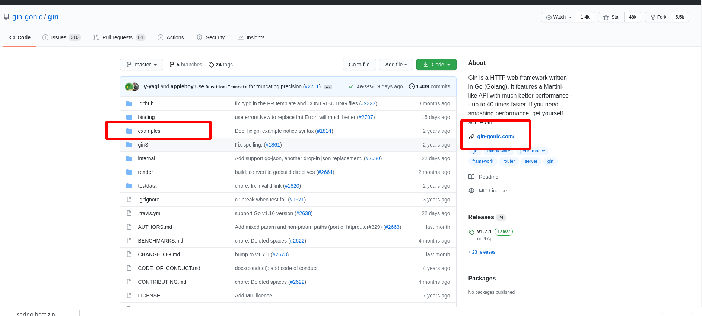
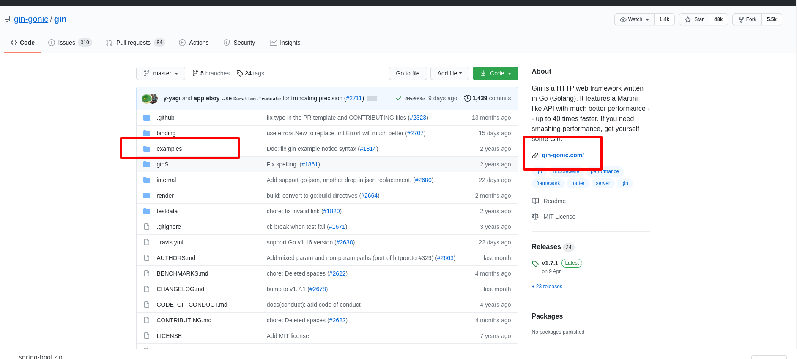

github 工作流¶
使用项目¶
快速找到项目¶
搜索技巧¶
项目文档¶
很多的开源项目都会有文档页面，有的可能是 github 上的 wiki 页，有的可能是一个单独的网址，如果是一个单独的网址，一般在项目中会标注网址。
 还有的项目会提供一些示例的代码或者用法

还有的项目会提供一些示例的代码或者用法

解决问题¶
关注进展¶
我们关注一些项目以后，这个项目的相关事件就会在我们的首页出现

贡献代码¶
大家都是如何基于 github 运作开源项目的,我们如何向开源项目共享代码。大概经历如下几个步骤：
因为某某原因，你需要向某个仓库
你在 Pull requests
和issue` 里面确认了没有人在类似的事情你浏览了该项目的 contributor-guide.md, 了解这个项目的开发规则
你将自己明显的仓库 clone 到本地，完成了开发和测试
将自己开发的代码通过
Pull requests的方式请求合并到原始仓库开源仓库的负责人review 了你的代码之后，确认没有问题给了一个大大赞，并且在
Pull requests下回复TLGM等字样，如果你没有通过 review, 他们会通知你整改项目负责人合并了你的代码